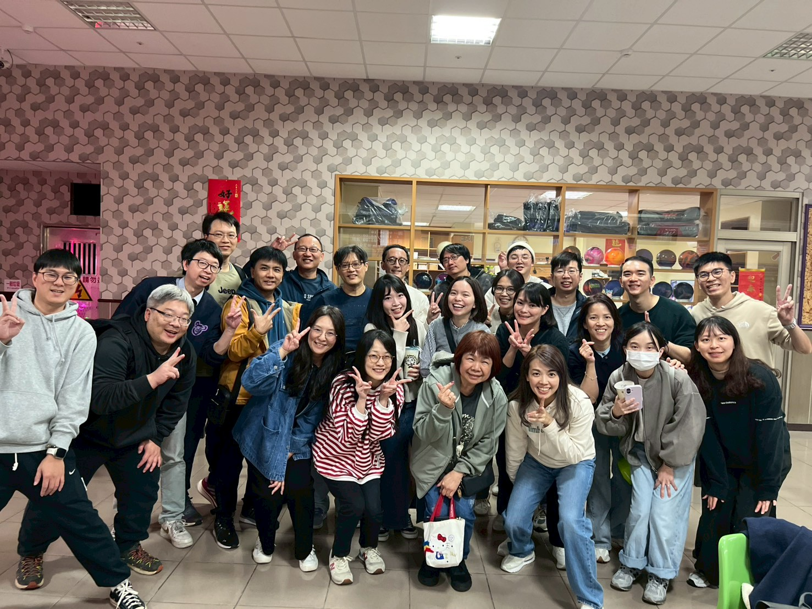

✨ 打造溫暖的生管團隊 ✨
系統登入
請輸入存取密碼以進入 DISC 測驗系統
製作單位：scm生管

DISC 專家級測驗
市面上的單選題容易受到「社會期許」影響而失真。
本系統採用專業的「強迫選擇法」，在每題的 4 個情境中，您必須選出 1 個「最符合」與 1 個「最不符合」的敘述，讓準確度逼近 100%。
💡 填寫指引：
- 請以「工作環境中的您」為直覺考量。
- 【重要提示】每題有 4 個選項，請務必點擊右側圓圈，挑選出 1 個「最符合」與 1 個「最不符合」。
- 完成雙向選擇後，「下一題」按鈕才會解鎖。請誠實作答，選項沒有絕對的好壞。
製作單位：scm生管
Question 1 / 15
題目內容
最符合
最不符合
⚠️ 必須：請選擇 1 個「最符合」與 1 個「最不符合」
製作單位：scm生管
您的 DISC 分析結果
基於強迫選擇法的潛意識計算，以下是您的核心行為風格。
製作單位：scm生管